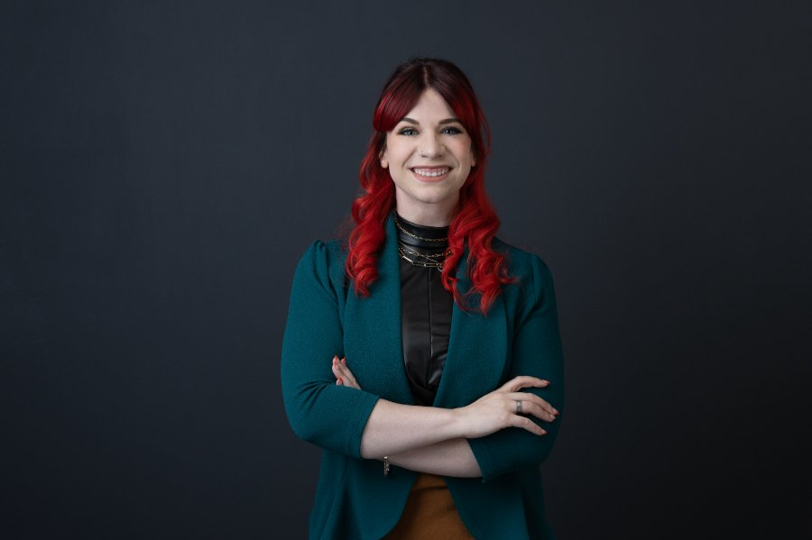
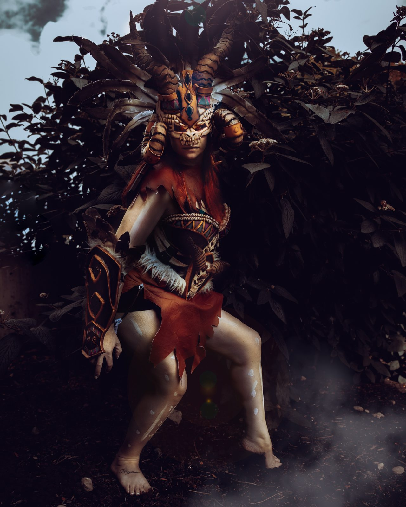
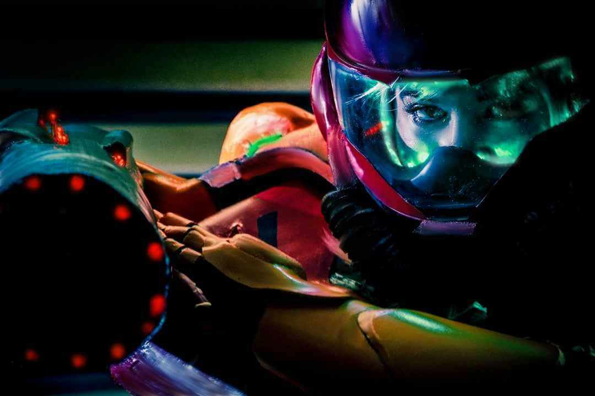
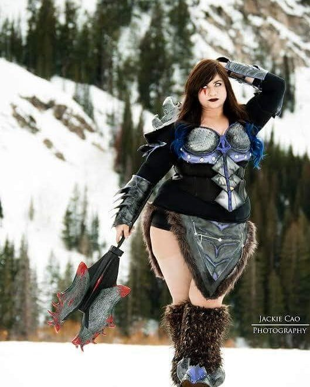
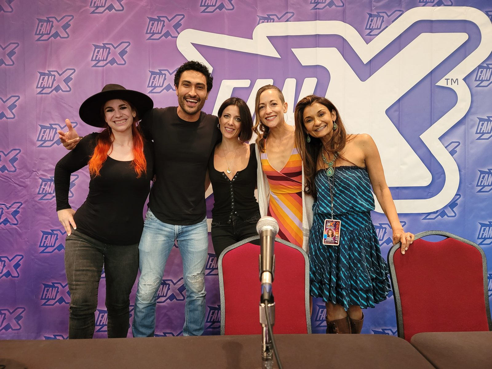
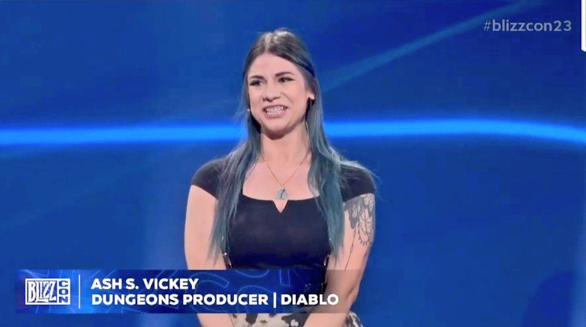

Senior Producer · Program Manager
Ash S. Vickey
also known as AshSlayGG
11+ years turning creative ideas into smooth, shipped, technical execution.
About
Structure for the imagination.

I'm a Senior Technical & Game Producer and Program Manager, known for leading art and design on major titles — including my time as Dungeons Producer for Blizzard Entertainment's Diablo IV.
Before AAA, I spent seven-plus years in mobile and indie studios helping launch and support titles across The Minions, The Secret Life of Pets, SCRABBLE, The Sims, LEGO, and Crayola. That foundation is where I learned to run a pipeline: fast, cross-functional, and built to scale.
Since Diablo IV, I've moved into large-scale technical production — backend infrastructure, security, and multi-studio co-development with partners including Wizards of the Coast, Rockstar, and Innersloth.
Off the clock, I'm AshSlayGG: streaming, building cosplay, and talking shop about what game development actually looks like behind the curtain.
Version History
Portfolio
-
v1.0
Electronic Arts — Maxis
QA Analyst → Associate Producer · 2014–2017
Cut my teeth on live mobile titles, bridging art, design, and QA to keep asset pipelines moving and biweekly updates shipping on schedule.
-
v1.1
Red Games Studio
Game Producer · 2019–2020
Owned roadmap execution for events, battle passes, and seasonal content — aligning design, engineering, and marketing around tight mobile release cycles.
-
v1.2
Redemption Games Studio
Game Producer, Mobile · 2020–2022
Ran task scheduling and sprint planning for live-service updates, coordinating in-game events and store submissions end to end.
-
v2.0
Blizzard Entertainment
Dungeons Producer, Environments · 2022–2024
Produced dungeon art and design through a AAA launch and five live seasons — scheduling, scope, and team wellbeing under sustained pressure.
-
v3.0
Wolfjaw Studios
Senior Technical Producer, Production Lead · 2024–Present
Direct technical production across security, infrastructure, and CI/CD for multiple studio partners — from partner onboarding to enterprise-scale backend delivery.
Where It Started
Before the job title.
Cosplay & craft
Long before the industry job title, there was a needle, thread, and a foam sword. I hand-crafted cosplays of my favorite video game characters — the hands-on problem solving that craft demands turned out to be the same instinct that makes a good producer.
Content creation
That craft opened the door to content creation and, eventually, to the games industry itself. I still create and game as AshSlayGG — same eye for detail, different audience.
Watch on Twitch




Contact
Let's build something.
Open to producer and program management opportunities, collaborations, and conversations about either side of the work.